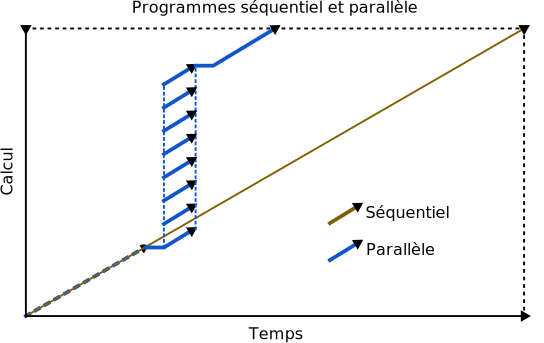
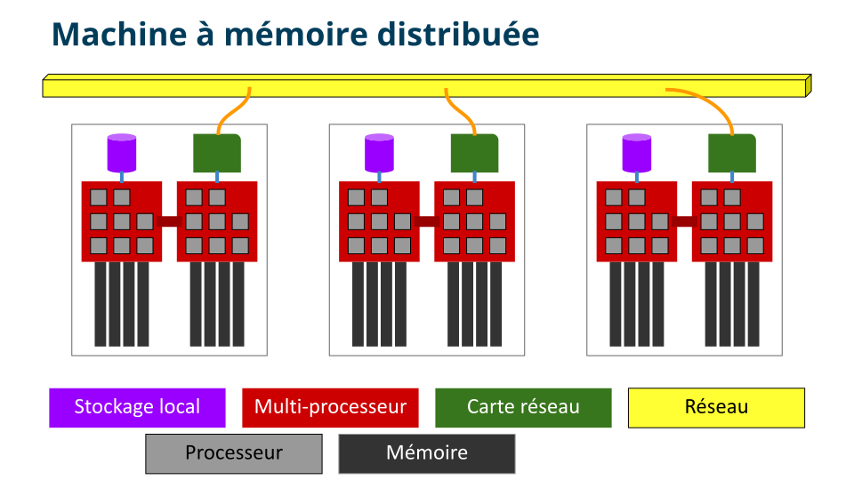
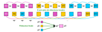

Il existe deux grandes catégories de tâches de calcul qui travaillent
sur un même problème : les tâches sérielles et les tâches parallèles.

Or, les superordinateurs modernes consistent en un grand nombre de
serveurs de calcul contenant chacun plusieurs processeurs qui
doivent se coordonner pour exécuter un programme parallèle.
MPI est la méthode la plus courante et portable de
paralléliser un programme s’exécutant sur plusieurs serveurs.
Une machine à mémoire distribuée est constituée de plusieurs serveurs de
calcul, communément appelés nœuds, qui sont connectés via un réseau de
haute performance. La mémoire est dite distribuée, car les programmes sur un
serveur ne peuvent pas accéder directement à la mémoire sur un autre serveur.

Dans ce type de machine, des variables en apparence identiques sont en fait
des instances totalement différentes dans des processus différents.
Par conséquent, il devient nécessaire d’établir un moyen de
communication entre les processus pour transférer des données.
Dans le cas d’un calcul impliquant une réduction de termes purement
mathématiques (qui ne proviennent pas d’un vecteur de données), les
opérations peuvent être divisées également entre les processus. Par exemple,
estimer la constante \(\pi\) au moyen d’une somme de milliards de termes.

Dans le cas d’un calcul qui utilise des données provenant d’un vecteur ou qui
génère des données à stocker dans un vecteur, les opérations peuvent être
divisées également entre les processus, mais il faut garder à l’esprit que
des optimisations dépendent de la proximité des données en mémoire.
Dans le cas d’un calcul utilisant des données disposées en deux dimensions,
comme des matrices ou des images, on peut diviser l’espace en partitions
horizontales, verticales ou en blocs.
Dans le cas d’un calcul utilisant des données d’un espace linéaire, mais qui
considère toutes les combinaisons de valeurs, on se retrouve avec un espace
de calcul à deux dimensions et, donc, avec les mêmes options de
partitionnement que dans la figure ci-dessus.
Dans le cas d’un problème comportant une liste de calculs non uniformes,
on voudrait pouvoir distribuer un calcul à la fois à chaque processus
disponible. Ce modèle de calcul parallèle comprend :
Un gestionnaire, habituellement le premier processus dans un groupe.
Ses responsabilités sont :
Distribuer des calculs et recevoir les résultats des travailleurs.
Envoyer un message spécial lorsqu’il faut quitter.
Des travailleurs, soient les processus restants dans le groupe.
Leurs responsabilités sont :
Recevoir un calcul à faire et envoyer les résultats au gestionnaire.
Quitter lorsque le gestionnaire envoie un message à cet effet.
Bref, toutes ces stratégies impliquent l’envoi et la réception de messages.